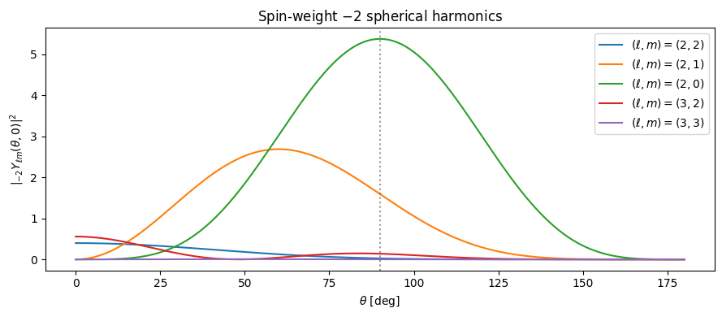
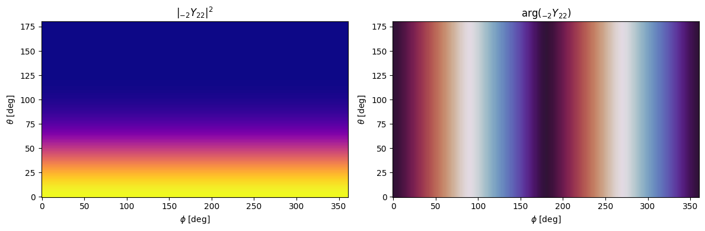
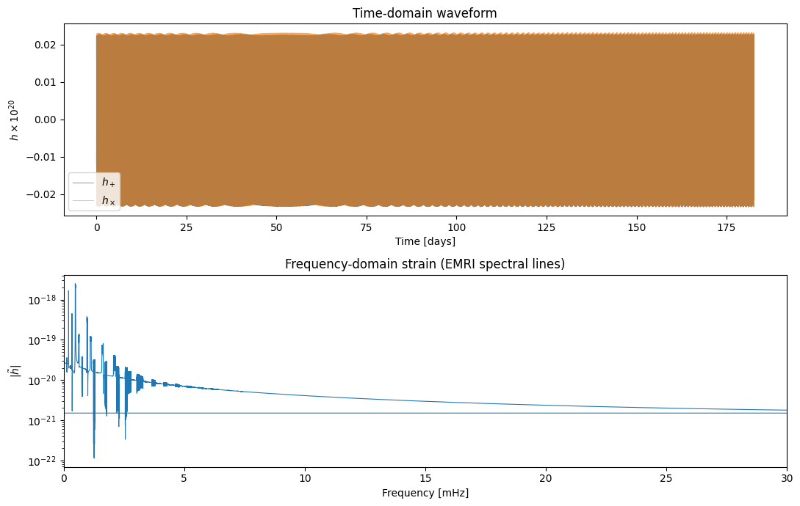
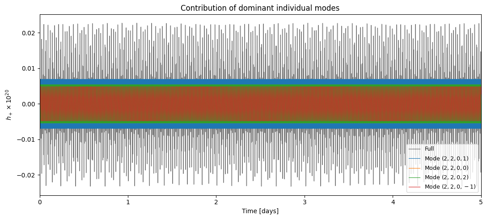
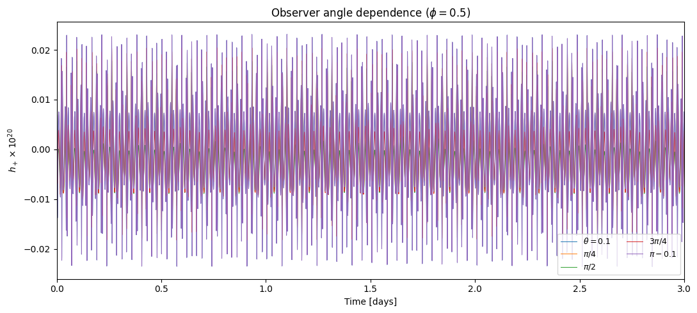

04 — Mode Summation and Harmonic Decomposition
This notebook covers fewtrax.summation.modes and fewtrax.utils.harmonics.
Topics:
The spin-weighted spherical harmonics \({}_{-2}Y_{\ell m}(\theta, \phi)\)
The mode summation formula for \(h_+ - i h_\times\)
Upsampling the sparse trajectory to a dense waveform grid
Frequency-domain transform
Contribution of individual modes to the strain
Background: The Mode Sum
The gravitational-wave strain at luminosity distance \(d_L\) is
where the complex conjugate (c.c.) term accounts for the \(m \to -m\) symmetry. Using the identity \(A_{\ell, -m, k, -n} = (-1)^\ell \overline{A_{\ell m k n}}\), the sum over negative-\(m\) modes can be written in terms of the positive-\(m\) amplitudes.
Spin-Weighted Spherical Harmonics
The \({}_{-2}Y_{\ell m}(\theta, \phi)\) are the spin-weight \(s = -2\) spherical harmonics. Expressed in terms of \(c = \cos(\theta/2)\) and \(s = \sin(\theta/2)\), the \(\ell = 2\) harmonics are:
Higher-\(\ell\) modes use the Goldberg et al. (1967) formula implemented in fewtrax.utils.harmonics.
[1]:
import os
import numpy as np
import matplotlib.pyplot as plt
import jax
import jax.numpy as jnp
jax.config.update("jax_enable_x64", True)
from dotenv import load_dotenv
load_dotenv()
DATA_DIR = os.getenv("FEW_DATA_DIR")
print(f"FEW_DATA_DIR = {DATA_DIR}")
from fewtrax.utils.harmonics import get_ylms_for_modes, _general_swsh_numpy
FEW_DATA_DIR = /Users/bertd/Documents/PhD/LISA/Codes/FastEMRIWaveforms/src/few/data
4.1 Spin-Weighted Spherical Harmonics
Let’s visualise \(|{}_{-2}Y_{\ell m}(\theta, \phi)|^2\) on the sphere for the dominant modes.
[2]:
theta_grid = np.linspace(0, np.pi, 200)
phi_val = 0.0 # fix phi, look at theta dependence
fig, ax = plt.subplots(figsize=(9, 4))
modes_plot = [(2, 2), (2, 1), (2, 0), (3, 2), (3, 3)]
for (l, m) in modes_plot:
Y = np.array([abs(_general_swsh_numpy(l, m, th, phi_val))**2 for th in theta_grid])
ax.plot(np.degrees(theta_grid), Y, label=f"$(\\ell,m)=({l},{m})$")
ax.set_xlabel(r"$\theta$ [deg]")
ax.set_ylabel(r"$|{}_{-2}Y_{\ell m}(\theta, 0)|^2$")
ax.set_title("Spin-weight $-2$ spherical harmonics")
ax.legend()
ax.axvline(90, color="k", linestyle=":", alpha=0.4, label="equatorial")
plt.tight_layout()
plt.show()

[3]:
# 2D polar map of Y_22
from matplotlib.colors import Normalize
theta2d = np.linspace(0.01, np.pi - 0.01, 120)
phi2d = np.linspace(0, 2*np.pi, 240)
TH, PH = np.meshgrid(theta2d, phi2d, indexing="ij")
Y22 = np.array([
[_general_swsh_numpy(2, 2, th, ph) for ph in phi2d]
for th in theta2d
])
fig, axes = plt.subplots(1, 2, figsize=(12, 4), subplot_kw={"projection": None})
axes[0].pcolormesh(np.degrees(PH), np.degrees(TH), np.abs(Y22)**2, cmap="plasma")
axes[0].set_xlabel("$\\phi$ [deg]")
axes[0].set_ylabel("$\\theta$ [deg]")
axes[0].set_title("$|{}_{-2}Y_{22}|^2$")
axes[1].pcolormesh(np.degrees(PH), np.degrees(TH), np.angle(Y22), cmap="twilight")
axes[1].set_xlabel("$\\phi$ [deg]")
axes[1].set_ylabel("$\\theta$ [deg]")
axes[1].set_title("$\\arg({}_{-2}Y_{22})$")
plt.tight_layout()
plt.show()

4.2 The direct_mode_sum Function
direct_mode_sum is a pure JAX function, JIT-compiled. It takes pre-computed harmonics and amplitudes at a fixed set of time points and computes the coherent sum.
The key computation is a \((N_t \times N_{\rm modes})\) matrix multiply:
phase = m * Phi_phi[:, None] + k * Phi_theta[:, None] + n * Phi_r[:, None]
w1 = sum(Y_pos * A * exp(-i * phase), axis=modes)
w2 = sum(Y_neg * conj(A) * exp(+i * phase), axis=modes) # m > 0 only
h = w1 + w2
[ ]:
from fewtrax.data import load_flux_data, load_amplitude_data
from fewtrax.amplitude import AmplitudeInterpolator
from fewtrax.trajectory import run_inspiral
from fewtrax.summation.modes import interpolated_mode_sum
# Set up data and trajectory
flux_data = load_flux_data(DATA_DIR)
amp_data = load_amplitude_data(DATA_DIR)
amp_interp = AmplitudeInterpolator(amp_data)
a = 0.7
t, p, e, Phi_phi, Phi_theta, Phi_r = run_inspiral(
a=a, p0=12.0, e0=0.4, T=0.5,
flux_data=flux_data, M=1e6, mu=10.0, dense_steps=80,
)
valid = ~np.isnan(np.asarray(p))
p_np = np.asarray(p)[valid]
e_np = np.asarray(e)[valid]
# Select modes and evaluate amplitudes
mode_inds = amp_interp.select_modes(a, p_np, e_np, threshold=1e-5)
teuk_modes = amp_interp.evaluate(a, p_np, e_np, specific_modes=mode_inds)
l_sel = amp_data.l_arr[mode_inds]
m_sel = amp_data.m_arr[mode_inds]
k_sel = amp_data.k_arr[mode_inds]
n_sel = amp_data.n_arr[mode_inds]
print(f"Selected {len(mode_inds)} modes")
# Observer angles
theta_obs, phi_obs = 0.3, 0.5
ylms_pos, ylms_neg = get_ylms_for_modes(l_sel, m_sel, theta_obs, phi_obs)
[5]:
# Evaluate the dense waveform
t_dense, h_dense = interpolated_mode_sum(
t[valid],
teuk_modes,
ylms_pos, ylms_neg,
Phi_phi[valid], Phi_theta[valid], Phi_r[valid],
l_sel, m_sel, k_sel, n_sel,
dt=10.0, M=1e6,
)
# Apply physical prefactor
from fewtrax.utils.constants import MSUN_SI, G_SI, C_SI, GPC_SI
mu, dist = 10.0, 1.0
amp_fac = mu * MSUN_SI * G_SI / C_SI**2 / (dist * GPC_SI)
h_phys = jnp.asarray(h_dense) * amp_fac
hp = jnp.real(h_phys)
hx = -jnp.imag(h_phys)
t_days = np.asarray(t_dense) / 86400.0
print(f"|h+|_max = {float(jnp.max(jnp.abs(hp))):.3e}")
print(f"N samples = {len(hp)}")
|h+|_max = 2.343e-22
N samples = 1577908
4.3 Frequency Domain
EMRIs radiate in a comb of narrow spectral lines at frequencies \(f_{mkn} = (m\Omega_\phi + k\Omega_\theta + n\Omega_r) / (2\pi)\), each slowly drifting with time.
[6]:
from fewtrax.summation.modes import to_frequency_domain
freqs, h_tilde = to_frequency_domain(h_phys, dt=10.0)
fig, axes = plt.subplots(2, 1, figsize=(11, 7))
# Time domain
axes[0].plot(t_days, np.asarray(hp) * 1e20, lw=0.5, label="$h_+$")
axes[0].plot(t_days, np.asarray(hx) * 1e20, lw=0.5, alpha=0.7, label="$h_\\times$")
axes[0].set_xlabel("Time [days]")
axes[0].set_ylabel("$h \\times 10^{20}$")
axes[0].set_title("Time-domain waveform")
axes[0].legend()
# Frequency domain
f_mHz = np.asarray(freqs) * 1000
axes[1].semilogy(f_mHz, np.asarray(jnp.abs(h_tilde)), lw=0.8)
axes[1].set_xlabel("Frequency [mHz]")
axes[1].set_ylabel(r"$|\tilde{h}|$")
axes[1].set_title("Frequency-domain strain (EMRI spectral lines)")
axes[1].set_xlim([0, 30])
plt.tight_layout()
plt.show()

4.4 Contribution of Individual Modes
Let’s decompose the waveform to see which modes contribute most.
[7]:
# Compute single-mode waveforms for the top 4 modes
power_all = amp_interp.get_mode_power(a, p_np, e_np)
power_sel = power_all[mode_inds]
top4_local = np.argsort(power_sel)[::-1][:4]
fig, ax = plt.subplots(figsize=(11, 5))
# Full waveform
ax.plot(t_days, np.asarray(hp) * 1e20, color="k", lw=1.0, alpha=0.5, label="Full")
for rank, local_idx in enumerate(top4_local):
# Sum over a single mode only
single_modes = teuk_modes[:, local_idx:local_idx+1]
single_ylm_p = ylms_pos[local_idx:local_idx+1]
single_ylm_n = ylms_neg[local_idx:local_idx+1]
_, h_single = interpolated_mode_sum(
t[valid], single_modes,
single_ylm_p, single_ylm_n,
Phi_phi[valid], Phi_theta[valid], Phi_r[valid],
l_sel[local_idx:local_idx+1], m_sel[local_idx:local_idx+1],
k_sel[local_idx:local_idx+1], n_sel[local_idx:local_idx+1],
dt=10.0, M=1e6,
)
h_s_phys = jnp.asarray(h_single) * amp_fac
lmn = f"$({l_sel[local_idx]},{m_sel[local_idx]},0,{n_sel[local_idx]})$"
ax.plot(t_days, np.asarray(jnp.real(h_s_phys)) * 1e20, lw=0.8, label=f"Mode {lmn}")
ax.set_xlabel("Time [days]")
ax.set_ylabel("$h_+ \\times 10^{20}$")
ax.set_title("Contribution of dominant individual modes")
ax.legend(fontsize=9)
ax.set_xlim([0, min(t_days[-1], 5)])
plt.tight_layout()
plt.show()
/var/folders/4b/bgdcprnn02g5pycstjf3rc0m0000gn/T/ipykernel_38207/1568253824.py:34: UserWarning: Creating legend with loc="best" can be slow with large amounts of data.
plt.tight_layout()
/Users/bertd/Documents/PhD/LISA/Projects/JAX-waveform/fewtrax/.venv/lib/python3.13/site-packages/IPython/core/pylabtools.py:170: UserWarning: Creating legend with loc="best" can be slow with large amounts of data.
fig.canvas.print_figure(bytes_io, **kw)

4.5 Observer Angle Dependence
The strain amplitude depends strongly on the viewing angle \(\theta\) through \({}_{-2}Y_{\ell m}(\theta, \phi)\). Face-on (\(\theta \approx 0\) or \(\pi\)) maximises the signal; edge-on (\(\theta = \pi/2\)) shows a mixture of modes.
[8]:
theta_vals = np.array([0.1, np.pi/4, np.pi/2, 3*np.pi/4, np.pi - 0.1])
labels = [r"$\theta=0.1$", r"$\pi/4$", r"$\pi/2$", r"$3\pi/4$", r"$\pi-0.1$"]
fig, ax = plt.subplots(figsize=(11, 5))
for th, lab in zip(theta_vals, labels):
ylms_p, ylms_n = get_ylms_for_modes(l_sel, m_sel, float(th), 0.5)
_, h_th = interpolated_mode_sum(
t[valid], teuk_modes, ylms_p, ylms_n,
Phi_phi[valid], Phi_theta[valid], Phi_r[valid],
l_sel, m_sel, k_sel, n_sel, dt=10.0, M=1e6,
)
h_th = jnp.asarray(h_th) * amp_fac
ax.plot(t_days, np.asarray(jnp.real(h_th)) * 1e20, lw=0.7, label=lab)
ax.set_xlabel("Time [days]")
ax.set_ylabel("$h_+ \\times 10^{20}$")
ax.set_title("Observer angle dependence ($\\phi=0.5$)")
ax.legend(ncol=2, fontsize=9)
ax.set_xlim([0, min(t_days[-1], 3)])
plt.tight_layout()
plt.show()

Summary
Component |
Description |
|---|---|
|
Computes \({}_{-2}Y_{\ell m}\) for a list of modes using the Goldberg (1967) formula |
|
JIT-compiled coherent sum; returns complex \(h_+ - ih_\times\) on sparse time grid |
|
Upsamples trajectory to dense grid via cubic spline before summing |
|
FFT-based frequency-domain strain |
Next: 05_full_waveform.ipynb — the high-level KerrEccentricEquatorialWaveform API and harmonic frequency tracks.
[ ]: